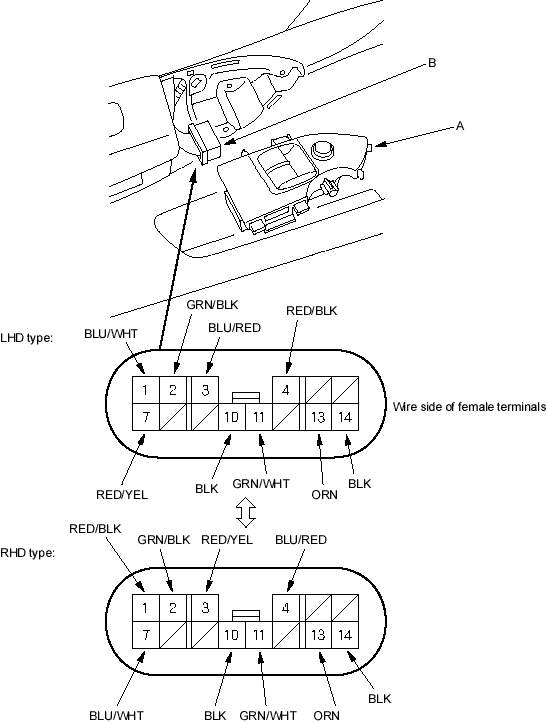

Power Windows
Master Switch Input Test
|
22-6 |
|
NOTE: The power window control unit is built into the power window master switch and it only controls the driver's window operations.
- Remove the power window master switch (A) (see page 22-9).
- Disconnect the 14P connector (B) from the master switch.

- Inspect the connector and socket terminals to be sure they are all making good contact.
- If the terminals are bent, loose or corroded, repair them as necessary and recheck the system.
- If the terminals look OK, make the following input tests at the connector.
- If a test indicates a problem, find and correct the cause, then recheck the system.
- If all the input tests prove OK, go to step 4.